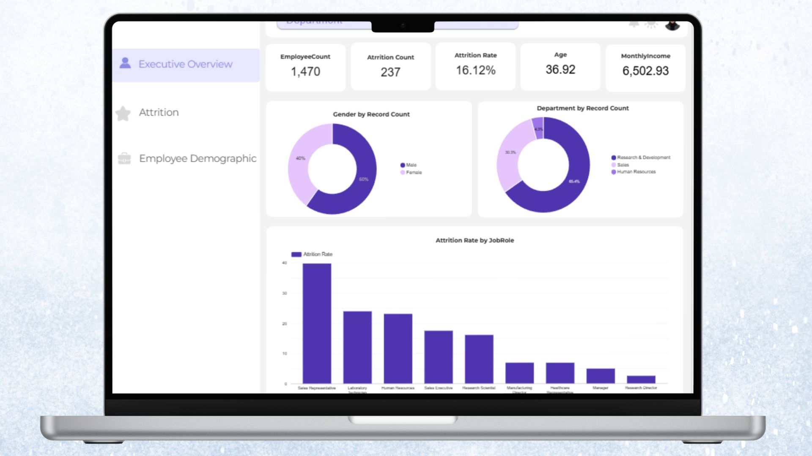
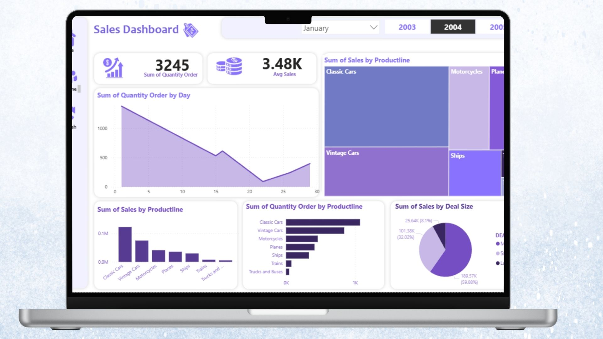
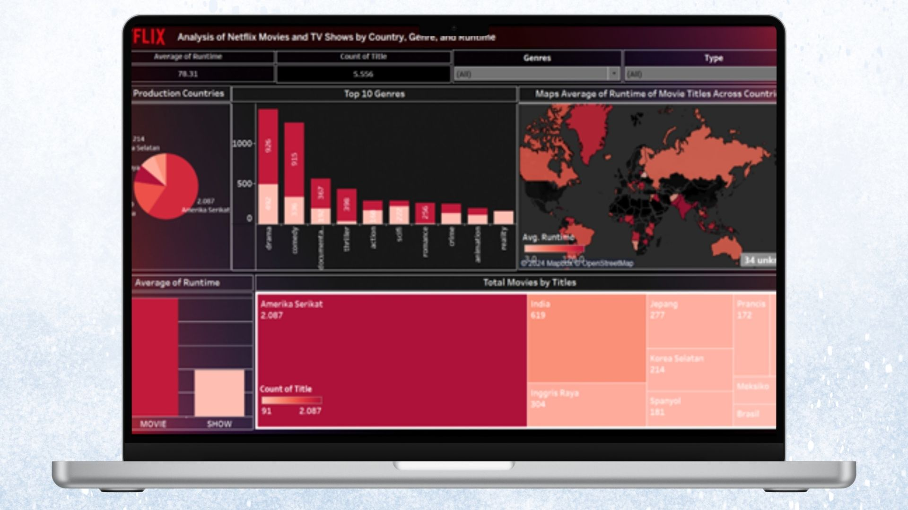
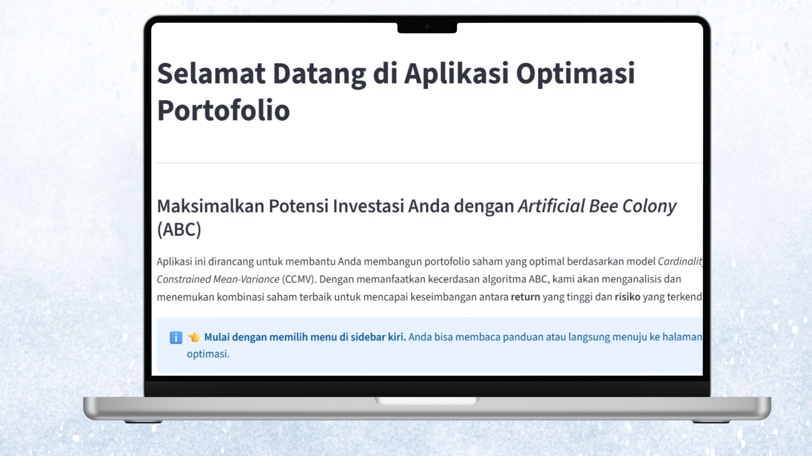

Data and business analyst with hands-on experience in workforce reporting, dashboard development, and data management.
Skilled in Excel, SQL, Python, Power BI, and Looker Studio to clean, analyze, and visualize data into actionable insights for KPI monitoring, reporting, and decision support.
Detail-oriented and proactive, with experience handling employee, sales, and operational data to improve reporting accuracy and support business decisions.
HC Analyst | Organizational Talent Development (OTD)
Jan 2026 - July 2026
▼
Overview: Supported Talent Management initiatives within the Organizational Talent Development division through HR analytics, process digitalization, dashboard development, and HR system implementation, while contributing to Organization Development projects focused on workforce planning and employee development.
KEY RESPONSIBILITIES
Coordinated STAR and Leadership Management Training programs for 72 employees, managing participant communication, training administration, LMS monitoring, documentation, and learning progress reporting.
Managed, cleaned, and validated 10,000+ employee records, including KPI, coaching, psychometric, and training data, to support HR reporting, talent management, and employee development.
Developed interactive Looker Studio dashboards for Talent Mapping, Leadership Development, and learning progress monitoring, enabling timely reporting and management decision making.
Built an Internship Management System using Google Apps Script to automate attendance, logbook, mentor approval, and payroll recap processes for 40+ interns, reducing administrative processing time by 98%.
Developed a Talent Management System integrating vacancy requests, recruitment tracking, successor mapping, interview documentation, and talent monitoring to improve HR operational efficiency.
PROJECTS
Orientation Monitoring Dashboard
Overview: Developed an Orientation Monitoring Dashboard to help the Talent Management team monitor employee orientation status, track employee movements, and streamline reporting through an interactive dashboard.
System Workflow:
1
Data Collection
Collected employee orientation, promotion, mutation, demotion, and master employee data from multiple HR data sources and consolidated them into a single dataset.
2
Data Preparation
Cleaned and standardized the data, handled inconsistencies, created new metrics, and prepared business calculations to ensure the dataset was accurate and analysis ready.
3
Dashboard Development
Connected the prepared dataset to Looker Studio, integrated multiple data tables, created calculated fields, and designed interactive visualizations with filtering capabilities.
4
Data Validation
Validated dashboard metrics by comparing the displayed results with the original source data to ensure consistency and reporting accuracy.
5
Monitoring & Reporting
Published the dashboard to provide management with real time visibility of orientation progress, employee movements, and detailed employee information.
Key Insights:
Provided real time visibility into employee orientation status, enabling HR to identify employees who had passed, failed, or exceeded their orientation period and required immediate follow up.
Enabled management to monitor promotion, mutation, and demotion trends across supervisory and managerial levels while providing detailed employee information for talent reviews.
Reduced manual reporting by consolidating multiple HR datasets into a single interactive dashboard, improving monitoring efficiency and supporting data driven talent management decisions.
Tools: Google Sheets, Looker Studio
Leadership Management Dashboard
Overview: Developed a Leadership Management Dashboard to monitor the progress and performance of the Leadership Management Training program across multiple coaching batches, providing management with real time insights into coaching completion, satisfaction scores, coach performance, and departmental achievements.
System Workflow:
1
Data Collection
Collected coaching evaluation and training progress data from multiple sources across three training batches and consolidated them into a single dataset.
2
Data Preparation
Cleaned and standardized the data, validated formulas, and calculated key metrics including coaching completion, satisfaction scores, final scores, rankings, and performance categories.
3
Dashboard Development
Connected the prepared data to Looker Studio, integrated datasets, created calculated fields, and developed interactive dashboards for executive summaries, coach leaderboards, departmental performance, and individual coach performance.
4
Data Validation
Verified dashboard calculations and visualizations by comparing them with the source data to ensure reporting accuracy and consistency.
5
Monitoring & Reporting
Published the dashboard to monitor training progress, evaluate coach performance, identify top and bottom performers, and support management reporting throughout the program.
Key Insights:
Provided a comprehensive view of Leadership Management Training progress through coaching completion, satisfaction scores, and overall performance across all training batches.
Enabled management to identify top and bottom performing coaches, compare coaching performance across departments, and recognize high performing functions.
Allowed individual coaches to review their detailed coaching results, rankings, coachee feedback, and performance metrics to support continuous improvement.
Tools: Google Sheets, Looker Studio
Internship Management System
Overview: Developed an Internship Management System to digitalize internship administration by automating attendance, logbook management, approval workflows, and monthly allowance recaps to improve operational efficiency.
System Workflow:
1
Intern Attendance & Logbook
Interns clock in and clock out, submit daily logbooks, and view attendance summaries, mentor feedback, and final evaluations.
2
Mentor Review & Approval
Mentors review and approve attendance records and logbooks, then submit intern performance evaluations.
3
Automated Data Synchronization
Approved records are automatically synchronized to the admin database for reporting and allowance calculations.
4
Admin Monitoring & Recap
Admins monitor internship status and generate monthly attendance recaps with a single click.
5
Internship Monitoring
The system provides real time monitoring of intern attendance, progress, and performance through an integrated dashboard.
Key Features:
Attendance Management: Digital clock in and clock out with automatic attendance summaries.
Logbook & Approval Workflow: Daily logbooks are submitted and approved through the system.
Performance Evaluation: Mentors provide feedback and final evaluations accessible to interns.
Automated Monthly Recap: One click attendance reports for monthly allowance calculations.
Internship Administration Dashboard: Centralized dashboard for monitoring intern status and attendance.
Impact: Digitalized the end to end internship administration process by automating attendance, approvals, and monthly recaps, reducing manual work and improving operational efficiency.
Tools: Google Sheets, Google Apps Script, HTML, CSS, JavaScript, Vercel
Talent Management System (TMS)
Overview: A web based Talent Management System that centralizes vacancy requests, candidate recommendations, interview documentation, and succession planning into a single platform. The system automatically recommends the most suitable internal candidates for each vacancy using configurable priority matching criteria, eliminating manual spreadsheet searches and fragmented workflows.
System Workflow:
1
Vacancy Request
HR receives an internal hiring request, and the vacancy is automatically displayed on the main dashboard.
2
Candidate Recommendation
The system retrieves employee master data and automatically recommends the most suitable internal candidates based on configurable priority matching criteria.
3
Interview & Successor Management
HR records interview schedules, evaluation results, successor decisions, and recruitment progress directly within the same platform.
4
Dashboard & Monitoring
Interactive dashboards monitor vacancy status, candidate pipelines, interview progress, and succession planning to support faster HR decision making.
Key Features:
Automated internal candidate recommendation using configurable priority matching.
Centralized vacancy request and recruitment tracking.
Interview scheduling, documentation, and evaluation management.
Successor nomination and talent monitoring.
Master data configuration for customizable matching criteria.
Impact: Reduced manual spreadsheet searching and eliminated the need to switch between multiple platforms by integrating candidate recommendation, interview documentation, and talent monitoring into a single web based system.
Tools: Google Apps Script, HTML, CSS, JavaScript, Google Sheets, Vercel
Employee Engagement Analysis Project
Overview: Conducted an employee engagement analysis on 2,454 employees using clustering and machine learning techniques to identify engagement segments and provide data driven recommendations for improving employee experience.
System Workflow:
1
Data Preparation
Employee Data & Data Preprocessing
2
Segmentation
K-Means Clustering
3
Driver Analysis
Random Forest & SHAP Validation → Importance Performance Analysis (IPA)
4
Feedback Extraction
BERTopic Analysis → Business Recommendations
Key Insights:
Analyzed engagement data from 2,454 employees based on the Aon Hewitt Employee Engagement Model.
Identified 3 employee engagement segments using K-Means Clustering.
Determined key engagement drivers using Random Forest and SHAP, then prioritized improvement initiatives through IPA.
Extracted employee feedback themes using BERTopic to support actionable HR recommendations.
Overview: Supported Annual Report, Sustainability Report, and PLN NP Statistics Report preparation through large scale data validation and reporting activities.
KEY ACTIVITY
Data validation & consistency checking for 1,000+ reporting data points.
Formula and logic verification across 20+ corporate indicators.
Reporting data consolidation and inconsistency resolution.
[ ASSISTANT LECTURER ]
Institut Teknologi Sepuluh Nopember
Statistical Quality Control
Mar 2025 - Jun 2025
▼
Facilitated laboratory sessions for 30+ students per class covering control charts, process capability analysis, and acceptance sampling using Excel and Minitab.
Contributed to average practical assessment scores above 80/100.
[ ASSISTANT LECTURER ]
Institut Teknologi Sepuluh Nopember
Experimental Design
Sep 2024 - Dec 2024
▼
Facilitated laboratory sessions for 30+ students per class covering Completely Randomized Design (CRD), Randomized Complete Block Design (RCBD), ANOVA, and hypothesis testing using Excel and Minitab.
Contributed to average practical assessment scores above 80/100.
[ ORGANIZATION ]
HIMADATA - ITS
Head of Advocacy & Student Welfare
Jan 2025 - Dec 2025
▼
Led the Advocacy and Student Welfare Division, coordinating a team of 3 members to deliver academic support and student welfare initiatives for Business Statistics students.
Key Contributions:
Organized a Scholarship Preparation Webinar attended by 100+ students, resulting in 15% scholarship applicants, exceeding the 10% target.
Managed a 10-session exam preparation program with 300+ total participants, achieving a 98.1% satisfaction rate.
Developed academic support initiatives, including the Academic Bank and Student Feedback Form, to enhance access to learning resources and strengthen communication between students and the department.
Staff of Advocacy and Student Welfare
Mar 2024 - Dec 2024
Supported student welfare initiatives and communication programs to enhance academic support and student engagement within the Business Statistics Department.
Key Contributions:
Managed the Student Feedback Form for 300+ students, facilitating the collection of academic concerns and feedback.
Recognized as Best Staff with a performance evaluation score of 83/100.
[ ORGANIZATION ]
Generasi Integralistik (Gerigi ITS)
Secretarial
Jul 2023 - Aug 2023
▼
Mentored and guided a group of 20+ freshmen throughout the university orientation program, supporting their adaptation to academic and campus life.
Key Contributions:
Managed participant administrative and emergency contact records.
Introduced campus resources, academic procedures, and student life.
Monitored participant engagement and served as the primary point of contact during orientation activities.
PROJECTS
Sales & Inventory DSS
Data driven Decision Support System using SQL, Python, and Power BI.
SQL, Python, Power BI
CLICK FOR DETAILS
Food Service Sales
End to end Decision Support System using SQL, Python, and Power BI.
Power BI, SQL, Python
CLICK FOR DETAILS

HR Dashboard
Provides overview of workforce metrics including headcount and attrition.
Looker Studio
CLICK FOR DETAILS

Sales Dashboard
Revenue & Customer Overview with Power BI.
Power BI
CLICK FOR DETAILS

Netflix Dashboard
Data visualization for Netflix content distribution.
Tableau
CLICK FOR DETAILS
Hotel Review Topic Modeling
Using BERTopic and LDA to uncover customer preferences.
Python, ML
CLICK FOR DETAILS
Stock Price Forecasting
Factor Analysis and forecasting of TLKM, JSMR, and UNVR.
R, EViews
CLICK FOR DETAILS

Portfolio Optimization
Interactive optimization dashboard using CCMV model & ABC algorithm.
Python, Streamlit
CLICK FOR DETAILS
Sales & Inventory Decision Support System
Overview: This case study simulates a nationwide motorcycle dealership network operating multiple branches across different provinces. Build a data driven Decision Support System that helps management answer: which branches are underperforming, which products need restocking, and what demand looks like in the months ahead.
System Workflow:
1
Database Design (SQL)
Designed a star schema and generated 31,447 simulated transactions. Delivered SQLite and MySQL DDL.
2
Business Analysis (SQL)
Analyzed product sales, margin, turnover, and stockout branches.
Built 5-page interactive dashboard (Summary, Branch, Inventory, Forecast, Recommendation).
Key Insights:
Total achievement sits at 96.78% of target. Revenue and forecasted demand show an upward trend.
Jakarta Barat leads in absolute revenue (102.87%). Surabaya has the lowest achievement rate (93.52%).
The Oli & Cairan category carries the highest average stock level, signaling excess inventory risk.
High-volume sparepart items show the largest forecast quantities and sit below reorder point.
Surabaya's -64.3% sales anomaly paired with continued high restocking, and Jakarta Barat's +93.6% demand spike paired with insufficient restocking are the clearest cases to act on.
Overview: FMCG distributors sell through hundreds of Food Service customers across multiple regions and channels, making it hard to spot which customers, products, or branches actually drive profit versus just volume. This project turns raw multi table transactional data into a data driven Decision Support tool: a relational database layer, automated pattern detection, and an interactive Power BI dashboard that lets management track performance, spot revenue concentration risk, and identify churning customers.
Built table structure in MySQL, imported cleaned CSVs, wrote 7 targeted analytical queries using JOIN and GROUP BY to answer specific business questions.
3
Pattern & Anomaly Detection (Python)
Built a script to trend monthly net sales and flag any month with a sales drop >20% vs. previous month, surfacing 4 anomaly months.
4
Dashboard & Segmentation (Power BI)
Built 4-page interactive dashboard. Applied Pareto (80/20) analysis and RFM segmentation to classify customer value and churn risk.
Key Insights:
Revenue is concentrated in a small group of top customers, a concentration risk worth ongoing monitoring.
Sales grew from 2024 to 2025, but profit margin slightly declined from 18.1% to 17.9%, growth is not translating fully into profitability.
Retail Tradisional and Horeka are the most profitable channels by margin, not by volume, a distinction the volume-only view would miss.
Champions drive the most sales value, while Lost Customers show ~273 days average recency, a clear, quantifiable churn-risk segment to act on.
Salesperson performance varies meaningfully across two axes (volume and margin), making a simple "top seller" ranking insufficient.
Overview: Provides a comprehensive overview of workforce metrics, including headcount, attrition, employee demographics, and workforce distribution to support HR decision making.
System Workflow:
1
Data Preparation
Cleaned and structured HR employee records.
2
Metric Calculation
Calculated attrition rate, tenure, and headcount metrics.
3
Dashboard Building
Designed interactive charts for executive monitoring.
Key Insights:
Identified attrition patterns across job roles, tenure, and salary levels.
Monitored workforce demographics and organizational composition.
Supported data driven workforce planning and retention strategies.
Overview: Visualizes sales performance through revenue trends, product performance, customer insights, and regional analysis to support data driven business decision making.
System Workflow:
1
Data Extraction
Extract order-level sales data (date, product, quantity, price, customer, region).
2
Data Modeling
Clean and model the data into a simple fact-dimension structure.
3
Metric Creation
Calculate Total Revenue, Deals Size, and identify top performing categories.
4
Dashboard Design
Build an interactive layout focusing on trends, regional heatmaps, and product leaderboards.
Key Insights:
Classic Cars generated the highest sales revenue.
Medium sized deals contributed nearly 60% of total sales revenue.
The USA recorded the highest sales, with Madrid and New York City leading.
Euro Shopping Channel was the highest-contributing customer.
Overview: Analyzes Netflix content distribution by content type, genre, country, ratings, and release trends to uncover patterns in the streaming catalog.
System Workflow:
1
Data Cleaning
Clean missing values and split multi-value fields (genres, cast).
2
Data Aggregation
Count titles by category, country, and release year.
3
Dashboard Building
Visualize trends and distributions using Tableau.
Key Insights:
The USA and India are the top content-producing countries.
"International Movies" and "Dramas" are the most popular genres.
Overview: This project breaks down thousands of customer reviews for My Tower Hotel Surabaya on Google Review to help management evaluate their service quality. The analysis compares two topic modeling methods namely Latent Dirichlet Allocation and BERTopic to find the most accurate model for clustering customer sentiment.
Workflow:
1
Data Collection
Collecting customer review data directly from the Google Review platform.
2
Text Preprocessing
Cleaning messy text by removing numbers and symbols then filtering Indonesian stopwords using the Sastrawi library.
3
Matrix Transformation
Converting clean text into a numerical format via the Document Term Matrix process.
4
Model Training and Evaluation
Running the topic modeling algorithms and measuring their quality using the Coherence Score metric.
5
Data Visualization
Mapping the text clustering results into visual representations to draw conclusions.
Key Insights:
The BERTopic model proved superior and smarter at understanding language context by achieving a coherence score of 0.5392 beating the older model which only scored 0.5242.
Topic extraction results showed that most visitors submitted complaints regarding room cleanliness issues.
For positive sentiment visitors highly praised the comfortable atmosphere and friendly service staff.
Manual intervention by merging topics actually degraded the model quality proving that pure machine results are far more optimal.
Forecasting and Modeling of TLKM, JSMR, and UNVR Stock Prices
Overview: This project focuses on forecasting and modeling the stock prices of three major Indonesian companies: Telkom, Jasa Marga, and Unilever. The analysis was conducted to directly observe how various macroeconomic and sectoral indicators influence the stock price movements of these companies in the capital market.
System Workflow:
1
Data Collection
Gathered the financial ratio data of issuers listed on the SRI KEHATI index, along with macroeconomic data such as exchange rates and money supply.
2
Issuer Clustering
Grouped the financial health of the issuers using the K Means algorithm to filter out the top three stocks.
3
Price Forecasting
Compared various time series methods and utilized Single Exponential Smoothing to predict stock price movements for the next five periods.
4
Regression Modeling
Applied the Error Correction Model to evaluate the impact of economic variables in both the short and long term.
Key Insights:
The Single Exponential Smoothing algorithm with an alpha parameter of 0.8 proved to be the most precise in forecasting stock prices, as it successfully recorded the lowest error rate.
The stock price projections for the next five periods showed a value of 3968.16 for Telkom, 4753.04 for Jasa Marga, and 3529.19 for Unilever.
Currency exchange rates and investment credit factors were proven to have a highly significant influence on Telkom's stock price fluctuations in the long term.
All built regression models were proven to be highly valid as they successfully met the normal distribution requirements and were free from autocorrelation issues.
Tools: K Means Clustering, Single Exponential Smoothing, Error Correction Model, and Classical Assumption Testing.
 RStudio
RStudio SPSS
SPSS Minitab
Minitab Python
Python Tableau
Tableau Looker Studio
Looker Studio Microsoft Word
Microsoft Word Canva
Canva